HISTORY OF THE MEDITERRANEAN FOUNDATION FOR SURVIVAL OF AFRICAN MIGRANTS
The Mediterranean Foundation for the Survival of African Migrants started
as a welfare group founded in Greece by two social workers made up of one
African and an European namely Ambassador Agiri Daniel and Dr Vasilis
Koniaris, after seeing how many people from Africa and other continents
were being maltreated and dying in their quest to move over to Europe for
greener pastures by all means and without following the right channel but
journeyed either through the Mediterranean sea or the desert illegally, and
the ill-treatment being melted to those that finally made it to Europe and are
seeking for asylum.
Some migrants follow the desert path that take them some weeks and others
months to get to their destinations while some preferred using the
Mediterranean sea with over crowded boats or balloon at the mercy of the
tempest, pirates or even some Government security agencies that do capsize
their boats on the high sea. Some end up been eaten by fishes or drown,
while others are taken as slaves, with their ladies and mothers being
countlessly raped and their young men as labourers who are at the mercy of
their masters. Many of these migrants are being deceived by traffickers
which has grown to a very big cartel or gang who cash in on their ignorance
to feed fat on them while promising them mouth watering opportunities
abroad.
The foundation name was formerly known as migrants crossing
Mediterranean which started on facebook page in 2019 where the illegal
activities of these cartels were exposed and also used in soliciting for help for
stranded individuals who were passing through difficult time, and seeking
for assistance from the public to help the less privileges, but the name was
later changed to Mediterranean foundation for the survival of African
Migrants in order to broaden the activities of the foundation. The
foundation’s new name (Mediterranean foundation for the survival of
African Migrants) is now fully registered in Nigeria with the Corporate Affairs
Commission as a Non-Governmental Organization (NGO)
Aims and objectives of the Organization:
MFSAM main aims and objectives are to fight and create awareness on the
societal ills viz:
(1) Human trafficking
(2) Child abuse
(3) Illegal/Irregular migration: To combat illegal immigration and design of
actions and information Campaigns at National and International level in
accordance with International Law and Conventions.
(4) Racism/xenophobia: The Foundation also fights against racial
discrimination which some of the Africans are being indicted because of no
Authorized papers or document. The Foundation sends some Lawyers on
their behalf to look into their cases. The Foundation involves in caring for the
illegal/irregular Migrants' health conditions by consulting Doctors of the
World to take good care of their health. Even those immigrants Germans are
given shelters by the Foundation. The Foundation has even extended its
Humanitarian works down to African Country, even some sick people are
being taken care of by the Foundation e.g (Nana). The Foundation has gone
to the extent of providing her with a wheel chair, and still planning to secure
artificial limbs to make her life more better. The Foundation are also helping
some students who cannot afford money to go back to school to acquire
their education.
We are working towards achieving this for the benefit of our target group the
poor, socially and economically deprived people.
* To create awareness among the people on prevailing socioeconomic
situation and encourage them for active participation in socioeconomic development program.
* To build capacity of women, teens, children and youth to demand for
quality public services.
* To build and develop institutions that promote dialogue and
reconciliation among the refugee.
* To promote and initiate community advocacy and rights approach to
development in the community.
* Initiate and promote alternative livelihoods in the post conflict era
among communities.
* To undertake suitable projects and programs with special emphasis on
illegal traveling, drug abuse, human trafficking, empowerment, Family
Welfare/Comprehensive Rural Development/Preservation of
environment and other humanitarian work.
Our membership span across African Nations, other Continents and the
globe at large because it involves humanity and its welfare.
Some of the achievements of MFSAM
* Peace talk/visit to Ukraine
* Supply of three wheel chairs to the physically challenged patients
* Resolved 100 cases in favour of women and children through
medications
* An SOS visit to Ogundijo community in Badeku village, Ibadan, Oyo
State. School children were given study materials and school sandals.
* Contributed food supply to over 100 refugees.
* Supported redistribution of the care burden in over 100 households;
men are helping their wives in executing house chores.
*The Meditranean Foundation for the Survival of African Migrant is still
working hard with some other Countries of the world in helping a lot of
individuals who are tired of staying abroad to return to their Home
Countries.
*The Mediterranean Foundation for the Survival of African Migrants
has been able to go to Libya – Malta – Greece – Italy and Spain to
rescue people with the German ship of which 70% of the victims are
Africans (Pictures Attached).
* Most of the achievements are shown in pictorials


 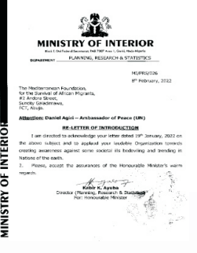
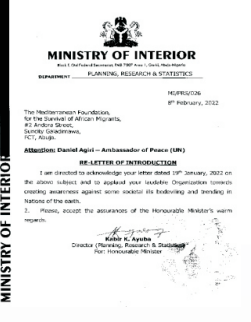
 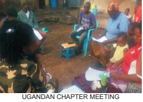
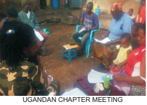

 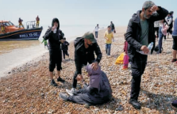
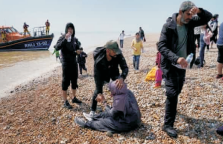
 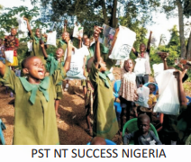
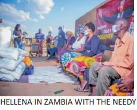
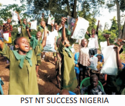
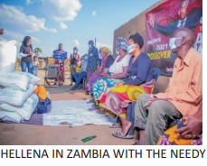
 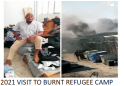
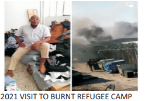